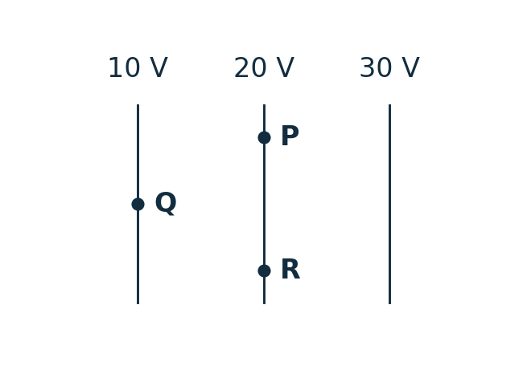
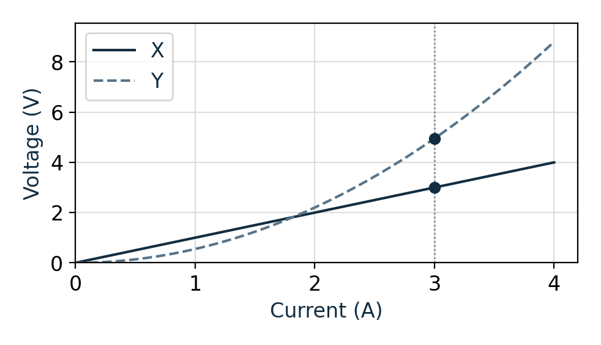
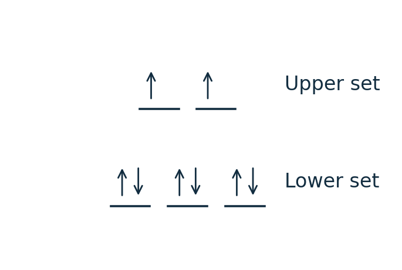

COMEDK UGET Test 17
180 minutes · 180 questions · +1 per correct answer · No negative marking
Physics
Q001. A circular current loop has central field B. It is replaced by a loop of the same radius carrying the same current in the opposite sense. What is its new field at the centre?
A) Half the magnitude, same direction
B) Same magnitude, opposite direction
C) Double the magnitude, opposite direction
D) Zero
Worked solution
Answer: (B) Same magnitude, opposite direction
Why and working: Biot–Savart gives magnitude μ₀I/(2R). Reversing the current reverses each field contribution without changing its magnitude.
Why not the others: (A) radius and current magnitude are unchanged. (C) no magnitude factor of two occurs. (D) the replacement loop still carries current.
Q002. Two objects attract in isolation. Their masses are both doubled while their separation is tripled. What fraction of the initial force remains?
A) 2/3
B) 1/9
C) 4/9
D) 9/4
Worked solution
Answer: (C) 4/9
Why and working: Newton's law scales with the product of masses and inverse square of distance. The two factors give 4/9.
Why not the others: (A) does not square both relevant combined changes correctly. (B) ignores doubling both masses. (D) inverts the ratio.
Q003. A bar magnet's magnetic moment points north. How is the field oriented at a point directly south along the extended magnetic axis?
A) South
B) North
C) East
D) Up
Worked solution
Answer: (B) North
Why and working: On the south axial extension the field points toward the south pole, which is northward from that point. The axial dipole field is parallel to the moment on either extension.
Why not the others: (A) treats the field as outward from a south pole. (C) the field is axial at that point. (D) the field has no vertical component on that axis.
Q004. A coil with constant resistance experiences a change in flux linkage of 0.24 Wb over 0.12 s. If its resistance is 8 Ω, what is the magnitude of the signed average induced current?
A) 2.0 A
B) 0.25 A
C) 0.03 A
D) 16 A
Worked solution
Answer: (B) 0.25 A
Why and working: Faraday's law gives average emf magnitude 0.24/0.12=2 V. With constant resistance its average current magnitude in the signed-average sense is 2/8=0.25 A.
Why not the others: (A) gives the emf number in amperes. (C) divides flux directly by resistance and omits time. (D) multiplies voltage by resistance.
Q005. Which statement distinguishes bulk modulus from Young's modulus for the same solid?
A) Both relate tangential stress to shear strain
B) Bulk modulus measures a change of mass under pressure
C) Bulk modulus relates pressure to relative volume change, while Young's modulus relates uniaxial stress to axial strain
D) Young's modulus depends on a volume change only
Worked solution
Answer: (C) Bulk modulus relates pressure to relative volume change, while Young's modulus relates uniaxial stress to axial strain
Why and working: Uniform pressure causes a volumetric response. Uniaxial loading is characterised by the longitudinal strain along the stress direction.
Why not the others: (A) describes shear modulus. (B) ordinary compression changes volume rather than mass. (D) Young's modulus uses longitudinal strain.
Q006. In a series RLC circuit R=8 Ω and the impedance magnitude is 10 Ω. The circuit is net capacitive, with X_L=4 Ω. What is X_C?
A) 10 Ω
B) 6 Ω
C) 2 Ω
D) 14 Ω
Worked solution
Answer: (A) 10 Ω
Why and working: The reactive magnitude is √(10²−8²)=6 Ω. For net capacitive operation X_C−X_L=6, so X_C=10 Ω.
Why not the others: (B) gives the net reactance alone. (C) would make it net inductive. (D) adds the impedance directly to X_L.
Q007. A plane wave in vacuum has electric field oscillating along x and travels along +z. Can its magnetic field have a nonzero x component?
A) Yes, and it must oscillate only along x
B) Yes, if it oscillates only along z
C) Yes, because electric and magnetic fields share every nonzero component
D) No, because its magnetic field is perpendicular to the electric field
Worked solution
Answer: (D) No, because its magnetic field is perpendicular to the electric field
Why and working: The magnetic field is perpendicular to the x direction of E and to the z propagation axis. Its oscillation is along the remaining y axis.
Why not the others: (A) would make the fields parallel. (B) would be longitudinal. (C) sharing the oscillation frequency does not require shared components.
Q008. An ideal hydraulic lift raises a 1200 N load through 3 mm. The input piston travels 90 mm with negligible losses. What force is applied to that piston?
A) 400 N
B) 120 N
C) 36000 N
D) 40 N
Worked solution
Answer: (D) 40 N
Why and working: Incompressibility and Pascal pressure transmission give equal ideal input and output work. Thus F×90=1200×3 in N·mm and F=40 N.
Why not the others: (A) uses the wrong displacement factor. (B) is not the work ratio. (C) inverts the displacement ratio.
Q009. A ray inside glass of index 1.60 hits a flat surface at incidence with sin i=0.85. Which external medium would first permit a propagating transmitted beam as its index is increased through the options?
A) Index 1.30
B) Index 1.20
C) Index 1.40
D) Index 1.00
Worked solution
Answer: (C) Index 1.40
Why and working: The conserved tangential factor is 1.60×0.85=1.36. Below that index there is no real transmitted angle; among the options only 1.40 exceeds it.
Why not the others: (A) 1.30 is below the threshold. (B) 1.20 is below the threshold. (D) air has still lower index.
Q010. In Huygens refraction from medium 1 to a faster medium 2, how do the two wavelet travel distances compare over the same construction time?
A) The distance in medium 1 is larger
B) The distance in medium 2 is larger
C) They are equal because frequencies agree
D) Both are zero at every interface
Worked solution
Answer: (B) The distance in medium 2 is larger
Why and working: Wavelet radius over the common time is vt. A larger speed gives a larger radius at the same frequency and time interval.
Why not the others: (A) reverses the speed comparison. (C) equal frequency does not equate wave speeds. (D) waves propagate on either side.
Q011. A measuring rod and the metal length being compared have identical fractional expansion coefficients and are warmed by the same small temperature rise. What happens to the reading in rod divisions if both expand freely and uniformly?
A) It stays unchanged
B) It rises by the metal's fractional expansion
C) It falls by the rod's fractional expansion
D) It doubles whenever the rod expands
Worked solution
Answer: (A) It stays unchanged
Why and working: Both the measured length and each scale division grow by the same factor. The ratio defining the reading is fixed.
Why not the others: (B) holds the scale spacing artificially fixed. (C) holds the measured length artificially fixed. (D) no doubling follows.
Q012. A metal's photoelectric threshold wavelength is λ₀. If the incident wavelength is λ₀/2, what is K_max in terms of work function φ?
A) 2φ
B) φ
C) φ/2
D) Zero
Worked solution
Answer: (B) φ
Why and working: Threshold gives hc/λ₀=φ. The shorter wavelength supplies photon energy 2φ, so the kinetic part is 2φ−φ=φ.
Why not the others: (A) gives the whole photon energy. (C) uses a linear wavelength scaling in the wrong direction. (D) would occur at threshold.
Q013. The Bohr radius of a hydrogen-like ion's n=2 orbit is 2a₀, with a₀ the hydrogen ground-state radius. What is its nuclear charge number Z?
A) 1
B) 4
C) 8
D) 2
Worked solution
Answer: (D) 2
Why and working: The hydrogen-like formula is r_n=n²a₀/Z. Thus 4/Z=2, giving Z=2.
Why not the others: (A) would give 4a₀. (B) would give a₀. (C) would give a₀/2.
Q014. A gas releases 30 J of heat while 70 J of mechanical work is done on it. What is its change in internal energy?
A) −100 J
B) +40 J
C) +100 J
D) −40 J
Worked solution
Answer: (B) +40 J
Why and working: Heat into the gas is −30 J and work on it is +70 J. The two energy transfers sum to +40 J.
Why not the others: (A) treats compression work as leaving too. (C) counts the heat release as input. (D) reverses the signed sum.
Q015. A nuclear reaction absorbs 4.655 MeV, with no other net stored energy besides the change in rest mass. Using 931 MeV per u, by how much is the total product rest mass larger?
A) 0.05 u
B) 4.655 u
C) 0.005 u
D) It is smaller by 0.005 u
Worked solution
Answer: (C) 0.005 u
Why and working: An endothermic reaction increases total rest mass. Divide the absorbed energy by 931 MeV/u to obtain 0.005 u.
Why not the others: (A) misplaces a decimal. (B) does not convert energy to mass. (D) would describe net energy release.
Q016. A silicon sample is acceptor-doped. It is warmed enough to generate some additional electron–hole pairs but remains in the extrinsic p-type regime. Which description still holds?
A) Electrons become the only mobile carriers
B) The acceptors turn into donors when a pair is generated
C) Each thermal pair adds one hole and no electron
D) Holes remain majority carriers, and each new thermal pair contributes one electron and one hole
Worked solution
Answer: (D) Holes remain majority carriers, and each new thermal pair contributes one electron and one hole
Why and working: Acceptor doping keeps a hole excess in the stated regime. Thermal generation promotes an electron into the conduction band and leaves a hole, adding equal pair counts.
Why not the others: (A) minority electrons and majority holes both exist. (B) ordinary thermal generation does not change dopant identity. (C) promotion creates both carriers.
Q017. An ideal monatomic gas is moved to half its original volume while its molecules' mean squared speed stays unchanged. What happens to pressure?
A) It halves
B) It stays unchanged
C) It doubles
D) It quadruples
Worked solution
Answer: (C) It doubles
Why and working: Kinetic theory gives pressure proportional to number density times mean squared speed for fixed molecular mass. The density doubles at half volume and the speed factor is fixed.
Why not the others: (A) inverts the number-density change. (B) fixed molecular energy does not fix pressure. (D) only one factor doubles.
Q018. What quantity is denoted by σ for a uniform charged sheet in electrostatics?
A) Charge per unit length
B) Charge per unit volume
C) Charge per unit surface area
D) Force per unit charge
Worked solution
Answer: (C) Charge per unit surface area
Why and working: An area element dA carries σdA. Surface charge density therefore has units C/m².
Why not the others: (A) describes line charge density. (B) describes volume charge density. (D) describes electric field.
Q019. The equipotential map marks P, Q and R. A small positive charge moves from P to Q, then from Q to R. Which relationship holds for the electrostatic work on the two legs?

A) Equal magnitudes and opposite signs
B) Equal positive work on both legs
C) Zero on both legs
D) Nonzero work only on the first leg
Worked solution
Answer: (A) Equal magnitudes and opposite signs
Why and working: From the labels, P and R are at 20 V and Q is at 10 V. The field's signed voltage drop is +10 V then −10 V, so the works have equal magnitudes and opposite signs.
Why not the others: (B) the second move raises potential. (C) each leg individually spans different potentials. (D) both legs involve a 10 V change.
Q020. One oscillator is described by A cos(ωt), another by A cos(ωt+π/2). At t=0 which describes the second oscillator?
A) At equilibrium and moving toward negative displacement
B) At equilibrium and moving toward positive displacement
C) At positive maximum with zero velocity
D) At negative maximum with zero velocity
Worked solution
Answer: (A) At equilibrium and moving toward negative displacement
Why and working: At phase π/2 the cosine vanishes. Differentiation gives −Aω sin(π/2)=−Aω, so velocity is negative.
Why not the others: (B) reverses the derivative sign. (C) requires phase zero. (D) requires phase π.
Q021. The V–I plot shows current held at 3 A while voltage is read for each of two components. Which gives the larger static resistance V/I at that operating point?

A) Component X
B) Component Y
C) Both because their currents agree
D) Neither because static resistance can only be read at the origin
Worked solution
Answer: (B) Component Y
Why and working: At the same nonzero I the component with higher measured V has larger V/I. The plotted V for Y at 3 A exceeds that of X.
Why not the others: (A) X has the lower voltage at the specified current. (C) equal current does not force equal voltage. (D) a nonzero operating point directly gives the ratio.
Q022. A very long straight wire produces field magnitude B at radius r. What current would make the field 2B at radius 3r relative to the original current I?
A) 6I
B) 3I
C) 2I/3
D) I/6
Worked solution
Answer: (A) 6I
Why and working: For an infinite wire B is proportional to I/r. Tripling radius and requiring a twofold field demands six times the current.
Why not the others: (B) keeps B fixed when radius triples. (C) scales radius in the wrong direction. (D) inverts both factors.
Q023. A travelling sinusoidal wave has wavelength 0.80 m and frequency 5 Hz. How long does the wave pattern take to advance 1.2 m?
A) 0.20 s
B) 0.15 s
C) 0.30 s
D) 6.0 s
Worked solution
Answer: (C) 0.30 s
Why and working: Wave speed is 0.80×5=4.0 m/s. Travel time for the pattern is 1.2/4.0=0.30 s.
Why not the others: (A) gives one oscillation period. (B) uses wavelength as a divisor without the full distance conversion. (D) multiplies distance by frequency.
Q024. A compass dipole is initially aligned with a uniform field. The field reverses exactly while the dipole remains momentarily fixed. What is true of torque at that instant?
A) It is maximal and parallel to the field
B) It is zero, but the exact antiparallel alignment is unstable
C) It remains zero and the new equilibrium is stable
D) It doubles because the field changed direction
Worked solution
Answer: (B) It is zero, but the exact antiparallel alignment is unstable
Why and working: Immediately afterward the angle is π, giving zero torque. Potential energy is maximal there, so a small angular perturbation causes rotation away from opposition.
Why not the others: (A) the cross product vanishes for antiparallel vectors. (C) energy is maximal rather than minimal. (D) the sin factor is zero in both exact alignments.
Q025. Viewed from the right, a loop's induced current is anticlockwise. Its area and orientation are fixed. Which external flux change could account for it?
A) A rightward field is increasing
B) A leftward field is decreasing
C) A rightward field is constant throughout
D) A rightward field through the loop is decreasing
Worked solution
Answer: (D) A rightward field through the loop is decreasing
Why and working: Anticlockwise current as seen from the right produces a rightward field. It can oppose loss of rightward flux by reinforcing the original direction.
Why not the others: (A) a growing rightward flux needs a leftward induced field. (B) a decaying leftward flux needs a leftward induced field. (C) constant flux gives no emf.
Q026. Using two significant figures, express the product of 3.2 cm and 4.56 cm as an area.
A) 15 cm²
B) 14.6 cm²
C) 14 cm²
D) 14.592 cm²
Worked solution
Answer: (A) 15 cm²
Why and working: The unrounded area is 14.592 cm². The least precise factor has two significant digits, so the third digit 5 rounds 14 upward to 15.
Why not the others: (B) retains three significant figures. (C) truncates rather than rounds. (D) retains unjustified digits.
Q027. In a series AC circuit with positive resistance, the inductive and capacitive voltage phasors have equal magnitude. Which relation holds between source voltage and current?
A) They are in phase
B) Current leads by 90°
C) Current lags by 90°
D) The source voltage must be zero
Worked solution
Answer: (A) They are in phase
Why and working: The two reactance phasors point oppositely and cancel. The remaining source voltage equals the in-phase resistive drop.
Why not the others: (B) would require a purely capacitive net response. (C) would require a purely inductive net response. (D) positive R leaves a voltage drop at nonzero current.
Q028. Which band has shorter wavelength than visible light and is commonly associated with imaging bones through soft tissue?
A) Infrared
B) Radio waves
C) Microwaves
D) X-rays
Worked solution
Answer: (D) X-rays
Why and working: X-rays penetrate many tissues and are attenuated strongly enough by bone to produce contrast. Their wavelengths are below the visible range.
Why not the others: (A) lies on the long-wavelength side. (B) has substantially longer wavelength. (C) also has longer wavelength than visible.
Q029. A scooter covers 100 m in 10 s, waits at rest for 5 s, and then covers another 100 m in 5 s. What is its overall average speed?
A) 13.3 m/s approximately
B) 15 m/s
C) 10 m/s
D) 20 m/s
Worked solution
Answer: (C) 10 m/s
Why and working: Average speed uses total distance 200 m and the entire elapsed time 20 s, including the stop.
Why not the others: (A) omits the waiting time. (B) averages the two leg speeds without time weighting. (D) uses the final segment alone.
Q030. Which condition on indices prevents a fibre core from guiding rays by total internal reflection at its boundary?
A) The core index is smaller than the cladding index
B) The core index is larger than the cladding index
C) The cladding index is positive
D) The light has any finite wavelength
Worked solution
Answer: (A) The core index is smaller than the cladding index
Why and working: Total internal reflection requires incidence from the optically denser region toward the rarer one. A lower-index core cannot meet that condition at its outer boundary.
Why not the others: (B) this is the required order for guidance. (C) positive index is normal and does not prevent guidance. (D) finite wavelengths can be guided.
Q031. Two slits are illuminated by the same stable monochromatic wave. One slit is then blocked. Which feature must disappear from the distant intensity pattern?
A) Every bright region on the screen
B) All diffraction from the open slit
C) The alternating fringes caused by interference of the two slit contributions
D) The electromagnetic wave from the open slit
Worked solution
Answer: (C) The alternating fringes caused by interference of the two slit contributions
Why and working: Blocking one slit removes one interfering contribution. The single remaining slit still transmits light and can produce diffraction.
Why not the others: (A) the unblocked slit still provides illumination. (B) single-slit diffraction remains possible. (D) the open aperture still emits a wave.
Q032. Nonzero vectors p and q satisfy 2p+3q=0. What comparison follows?
A) q is in the same direction with three halves its magnitude
B) q is perpendicular to p
C) Their magnitudes must be equal
D) q is opposite to p with two thirds its magnitude
Worked solution
Answer: (D) q is opposite to p with two thirds its magnitude
Why and working: Solving gives q=−(2/3)p. The scalar's sign reverses direction and its magnitude sets the length ratio.
Why not the others: (A) has both wrong sign and ratio. (B) nonzero scalar multiples are parallel or antiparallel. (C) the scale factor is not one.
Q033. A monochromatic beam contains 2×10¹⁷ photons per second, each having energy 3×10⁻¹⁹ J. What is its radiant power?
A) 0.60 W
B) 0.060 W
C) 6.0 W
D) 6×10³⁶ W
Worked solution
Answer: (B) 0.060 W
Why and working: Power is energy per second, so multiply photon rate by energy per photon. The product is 6×10⁻² J/s.
Why not the others: (A) moves the decimal by one place. (C) fails to retain the combined exponent. (D) adds the powers after dropping a negative sign.
Q034. A Bohr hydrogen orbit has kinetic energy one fourth of that in the ground orbit. What principal quantum number and radius does that imply?
A) n=4 and radius 16a₀
B) n=2 and radius 2a₀
C) n=1 and radius a₀/4
D) n=2 and radius 4a₀
Worked solution
Answer: (D) n=2 and radius 4a₀
Why and working: Kinetic energy is proportional to orbital speed squared and hence to 1/n². The stated ratio gives n=2 and the radius is n²a₀=4a₀.
Why not the others: (A) would give one sixteenth the kinetic energy. (B) radius follows n squared. (C) the ground orbit has the original kinetic energy.
Q035. An object receives +3 N·s impulse along x. Its initial momentum was −5 kg·m/s along x. What is its final signed momentum?
A) +8 kg·m/s
B) −2 kg·m/s
C) −8 kg·m/s
D) +3 kg·m/s
Worked solution
Answer: (B) −2 kg·m/s
Why and working: Final momentum equals initial plus impulse. The signed addition is −5+3=−2.
Why not the others: (A) treats the original sign as positive. (C) treats the impulse as negative. (D) gives change rather than final momentum.
Q036. If nucleus X has 20 nucleons and total binding energy 160 MeV, what quantity should be compared with the vertical coordinate on a binding-energy-per-nucleon curve?
A) 160 MeV
B) 20 MeV
C) 8 MeV
D) 3200 MeV
Worked solution
Answer: (C) 8 MeV
Why and working: The vertical ordinate divides total binding by nucleon number. The ratio is 160/20=8 MeV per nucleon.
Why not the others: (A) gives the total energy instead. (B) gives nucleon count with energy units. (D) multiplies instead of dividing.
Q037. Under an applied junction bias the depletion layer becomes wider. What does this indicate about the external field relative to the built-in junction field?
A) It reinforces the built-in field
B) It cancels the built-in field entirely
C) It points perpendicular to the junction field
D) It reverses both donor and acceptor charge signs
Worked solution
Answer: (A) It reinforces the built-in field
Why and working: Reverse bias reinforces the barrier field and pulls mobile carriers away from the junction, broadening depletion.
Why not the others: (B) forward bias tends to make the region thinner. (C) bias across the junction acts along its normal direction. (D) fixed impurity charge signs are unchanged.
Q038. A motor lifts a mass through a height h in time t at uniform speed. If it lifts the same mass to height 2h in time 3t, what is the new average useful power relative to the old?
A) 3/2
B) 6
C) 1/6
D) 2/3
Worked solution
Answer: (D) 2/3
Why and working: Useful work is mgh and power divides by elapsed time. Doubling work while tripling time gives 2/3.
Why not the others: (A) inverts the ratio. (B) multiplies work and time factors. (C) inverts work as well as time.
Q039. Can a continuous electrostatic field line form a closed loop entirely in a region where E is nonzero?
A) Yes, if the loop encloses no net charge
B) Yes, if the field magnitude is constant along it
C) No, the potential would have to decrease continuously and return to its starting value
D) No, because electric field lines are always finite straight segments
Worked solution
Answer: (C) No, the potential would have to decrease continuously and return to its starting value
Why and working: Along any directed field line E·dl is positive, so potential falls. A full return would contradict the uniqueness of electrostatic potential.
Why not the others: (A) charge enclosed is a separate flux issue. (B) constant nonzero magnitude would still give a nonzero line integral. (D) real field lines may curve.
Q040. A positive charge q is moved from far away to a point where two fixed charges produce zero net potential. What electrostatic work is done during this move by the source field?
A) Always positive because q is positive
B) Always negative because the path may pass near a source
C) It equals the source pair's interaction energy
D) Zero
Worked solution
Answer: (D) Zero
Why and working: Work is q(V_initial−V_final). Both endpoint potentials are zero; intermediate field forces do not change the net work.
Why not the others: (A) charge sign alone is insufficient. (B) electrostatic work is path independent. (C) only the moved charge's potential energy change enters.
Q041. Two torques about an axle have equal magnitudes and opposite signs and act for the same duration, one after the other. What net angular momentum change do they produce?
A) Twice either angular impulse magnitude
B) One positive angular impulse
C) Zero
D) One negative angular impulse
Worked solution
Answer: (C) Zero
Why and working: Angular momentum change is the time integral of signed torque. The equal opposite angular impulses cancel.
Why not the others: (A) adds magnitudes regardless of sign. (B) ignores the negative pulse. (D) ignores the positive pulse.
Q042. A 12 V battery powers a 6 Ω resistor for 5 minutes. A second 6 Ω resistor is then added in parallel and the pair is powered for another 2 minutes. What total energy does the battery supply in the ideal circuit?
A) 10080 J
B) 12960 J
C) 17280 J
D) 5760 J
Worked solution
Answer: (B) 12960 J
Why and working: First the power is 144/6=24 W for 300 s, giving 7200 J. The parallel pair has 3 Ω and draws 48 W for 120 s, giving 5760 J. Add both stages.
Why not the others: (A) uses the first power in both stages. (C) uses the higher power for all seven minutes. (D) counts the parallel stage alone.
Q043. Two ideal long solenoids have equal total turns and carry equal currents. Solenoid X is half as long as Y. Which statement about their central fields follows?
A) They are equal because their total turns agree
B) X has half the magnitude because its length is smaller
C) X has twice the field magnitude because its turns per length are doubled
D) X has four times the magnitude because its turn density doubles
Worked solution
Answer: (C) X has twice the field magnitude because its turns per length are doubled
Why and working: For long solenoids the internal field is proportional to turns per unit length at fixed current. Equal N and smaller L give twice the turn density.
Why not the others: (A) total turns do not fix turn density. (B) inverts the length effect. (D) uses a squared dependence on turn density.
Q044. At altitude equal to Earth's radius, what fraction of surface gravitational acceleration acts in a spherical model?
A) 1/4
B) 1/2
C) 1/8
D) 1
Worked solution
Answer: (A) 1/4
Why and working: The centre-to-point distance is 2R, not R. The inverse-square relation then gives g_h/g_0=1/4.
Why not the others: (B) uses inverse distance. (C) uses an inverse cube. (D) ignores altitude.
Q045. Why is the tangent to a magnetic field line at a regular point used to orient a small compass there?
A) It gives the local electric potential
B) It gives the local field direction with which the north-seeking end aligns
C) It points along the motion of every charged particle nearby
D) It is always perpendicular to the compass field at equilibrium
Worked solution
Answer: (B) It gives the local field direction with which the north-seeking end aligns
Why and working: A small magnet experiences torque toward external field alignment. The line tangent represents the local direction of that field.
Why not the others: (A) magnetic line geometry is not a voltage reading. (C) particle motion also depends on initial velocity and forces. (D) stable alignment is parallel.
Q046. An inductor's current ramps linearly up for 2 s from zero to a maximum, then returns linearly to zero in 1 s. Its inductance is constant. How do self-induced emf magnitudes on the two ramps compare?
A) The upward ramp gives twice the magnitude
B) They agree because the endpoint current change magnitudes agree
C) The downward ramp gives twice the magnitude
D) Both vanish because the total current change over the full event is zero
Worked solution
Answer: (C) The downward ramp gives twice the magnitude
Why and working: Each ramp has the same change magnitude but the downward ramp lasts half as long. Its rate magnitude is twice as large, and the self-induced emf scales with this rate.
Why not the others: (A) the longer ramp is gentler. (B) emf depends on rate rather than change alone. (D) full-event cancellation does not make stage emfs vanish.
Q047. Two materials shear by the same angle under the same shear stress. Which conclusion follows in their linear elastic regime?
A) The thicker block necessarily has the larger modulus
B) Their bulk moduli must be equal too
C) Their shear moduli vanish because the strains are equal
D) They have the same shear modulus
Worked solution
Answer: (D) They have the same shear modulus
Why and working: Shear modulus is shear stress divided by shear strain. Equal stresses and angles give equal ratios but say nothing about bulk response.
Why not the others: (A) geometry alone does not change the ratio given equal stress and strain. (B) bulk modulus measures a different deformation. (C) finite equal values need not be zero.
Q048. A series RLC circuit initially resonates at f. If its inductance becomes four times larger and its capacitance is unchanged, what source frequency again makes net reactance zero?
A) f/2
B) f/4
C) 2f
D) 4f
Worked solution
Answer: (A) f/2
Why and working: Resonance f=1/(2π√LC) is inversely proportional to the square root of L for fixed C. A fourfold L gives half the frequency.
Why not the others: (B) uses inverse linear scaling. (C) inverts the square-root scaling. (D) uses direct linear scaling.
Q049. At an air-to-glass spherical interface, where must a point object be in paraxial optics for the refracted rays to emerge parallel? Take n_air=1, n_glass=1.5 and R=+8 cm.
A) 8 cm on the air side
B) 24 cm on the glass side
C) 16 cm on the air side
D) 16 cm on the glass side
Worked solution
Answer: (C) 16 cm on the air side
Why and working: With image at infinity, n₂/v=0. Then −n₁/u=(n₂−n₁)/R=0.5/8, giving u=−16 cm in air.
Why not the others: (A) does not divide by the index difference. (B) uses the image-side focal distance of a different configuration. (D) uses the wrong sign for the object.
Q050. At a fixed low speed through the same viscous liquid, how does the Stokes drag on a sphere change if its radius doubles?
A) It quadruples
B) It is unchanged
C) It halves
D) It doubles
Worked solution
Answer: (D) It doubles
Why and working: Stokes drag 6πηrv is linear in radius at fixed viscosity and speed.
Why not the others: (A) uses area scaling rather than Stokes scaling. (B) radius enters the drag explicitly. (C) inverts the scaling.
Q051. Two double-slit arrangements use the same wavelength. The second has 20% larger slit separation and 50% larger screen distance. What is the ratio of second to first fringe widths?
A) 4/5
B) 9/5
C) 3/2
D) 5/4
Worked solution
Answer: (D) 5/4
Why and working: Fringe width is λD/d. The second-to-first ratio is 1.50/1.20=1.25=5/4.
Why not the others: (A) inverts the two geometry factors. (B) multiplies the factors instead of dividing. (C) ignores the separation change.
Q052. An electron's momentum magnitude goes from p to 3p. How does its matter-wave wavelength change?
A) It triples
B) It falls to one third
C) It falls to one ninth
D) It remains unchanged
Worked solution
Answer: (B) It falls to one third
Why and working: The de Broglie relation is λ=h/p. Tripling momentum divides wavelength by three.
Why not the others: (A) assumes direct proportionality. (C) squares the momentum factor. (D) fixed particle identity does not fix its momentum.
Q053. Liquid water is warmed from 1°C to 4°C at ordinary pressure. What happens to its density?
A) It increases
B) It decreases
C) It remains exactly constant
D) It becomes the same quantity as its mass
Worked solution
Answer: (A) It increases
Why and working: Water has its maximum density close to 4°C. On warming toward that point from below, it contracts at fixed mass.
Why not the others: (B) above 4°C the typical warming trend differs. (C) this interval has anomalous expansion behaviour. (D) density is mass per volume.
Q054. Which pair of downward transitions belongs to the same hydrogen spectral series?
A) 4→2 and 4→3
B) 5→3 and 4→3
C) 3→1 and 4→2
D) 5→2 and 3→1
Worked solution
Answer: (B) 5→3 and 4→3
Why and working: A series groups emission transitions ending at the same lower n. Both 5→3 and 4→3 end at n=3.
Why not the others: (A) their starting levels match but final levels differ. (C) 4→2 belongs to a different series from 3→1. (D) they end at different levels.
Q055. What physical quantity allows light fusion and heavy fission to be exothermic when their products are more tightly bound per nucleon?
A) The decrease in total rest energy of products relative to reactants
B) The increase of total charge in every reaction
C) The disappearance of all mass in the products
D) Friction between individual electrons and nuclei
Worked solution
Answer: (A) The decrease in total rest energy of products relative to reactants
Why and working: Greater total binding lowers the rest energy for the same underlying particles. The energy difference appears in other forms such as kinetic energy.
Why not the others: (B) charge is conserved. (C) only the rest-mass difference is converted to released energy. (D) electron friction is not the nuclear energy source.
Q056. A closed gas process has ΔU=−40 J, with heat input +10 J. How much work was done by the gas?
A) −50 J
B) +30 J
C) −30 J
D) +50 J
Worked solution
Answer: (D) +50 J
Why and working: From ΔU=Q−W_by, solve W_by=Q−ΔU=10−(−40)=50 J.
Why not the others: (A) is the work done on the gas. (B) adds the signed figures instead of subtracting ΔU. (C) uses the wrong heat sign as well.
Q057. An ideal diode is connected to a source with p side at −2 V and n side at +1 V. What does the idealised conduction model predict?
A) Forward bias and unrestricted positive current through the diode itself
B) Zero bias because the terminal magnitudes are small
C) Zero bias because one terminal is positive
D) Reverse bias and zero current
Worked solution
Answer: (D) Reverse bias and zero current
Why and working: The p-side potential relative to n is −3 V. This is reverse bias, so an ideal blocking diode carries no reverse current.
Why not the others: (A) has the relative bias backwards. (B) the signed difference is nonzero. (C) opposite signs make the potential difference larger.
Q058. A short dipole of moment magnitude p occupies a uniform field E. Which two orientations give equal potential energy but opposite torques in the same plane?
A) 0° and 180° from alignment
B) 30° clockwise and 30° anticlockwise from alignment
C) 30° and 60° in the same sense from alignment
D) Two copies of 30° clockwise alignment
Worked solution
Answer: (B) 30° clockwise and 30° anticlockwise from alignment
Why and working: The energy −pE cos θ is even in the signed angle. Torque acts to reduce displacement from alignment and reverses sign for equal angles on opposite sides.
Why not the others: (A) these have opposite energies and both torques vanish. (C) the cosines differ. (D) the orientations would have identical torques.
Q059. At 300 K a gas has rms molecular speed v. It is replaced by a gas whose molecules have half the mass. What temperature of the new gas would give rms speed v/2?
A) 37.5 K
B) 75 K
C) 150 K
D) 600 K
Worked solution
Answer: (A) 37.5 K
Why and working: Squared speed is proportional to T/m. Making the speed one half requires T/m one quarter as large, and halving the mass requires another factor of one half in T. Thus T=300/8.
Why not the others: (B) uses the squared speed change but ignores the lower mass. (C) accounts only for mass. (D) the temperature must drop rather than rise.
Q060. A metal sphere and a plastic sphere each receive a small charge at a single surface point. After time for electrostatic equilibrium, which is the usual comparison?
A) Charge spreads over the conducting metal surface but remains more localised on the insulator
B) Charge spreads equally readily on both because both contain electrons
C) Charge immediately permeates the metal interior uniformly and vanishes from plastic
D) The plastic becomes a source of free protons that leave its surface
Worked solution
Answer: (A) Charge spreads over the conducting metal surface but remains more localised on the insulator
Why and working: Metal has mobile carriers that redistribute until electrostatic equilibrium. Bound charges in an ordinary insulator cannot rearrange through the object in the same way.
Why not the others: (B) the mobility, not mere existence, of electrons is decisive. (C) net charge of an isolated conductor resides at its surface. (D) the comparison does not require mobile protons.
Chemistry
Q061. What unit is used for molarity?
A) mol/kg of solvent
B) mol/L of solution
C) g/kg of solvent only
D) A dimensionless mole ratio
Worked solution
Answer: (B) mol/L of solution
Why and working: Molarity is moles of solute per litre of final solution.
Why not the others: (A) this defines molality. (C) does not express a molar concentration. (D) mole fraction is dimensionless.
Q062. Which addition gives predominantly 1-bromobutane from but-1-ene due to a peroxide effect?
A) HCl in the presence of an organic peroxide
B) Br₂ with no reagent providing hydrogen
C) HBr under ordinary ionic addition conditions without peroxide
D) HBr in the presence of an organic peroxide
Worked solution
Answer: (D) HBr in the presence of an organic peroxide
Why and working: An organic peroxide initiates radicals. Br adds to the terminal C, leaving the more stable secondary radical before hydrogen transfer from HBr.
Why not the others: (A) the usual peroxide effect does not apply to HCl. (B) bromine addition gives two Br atoms. (C) ionic HBr addition favours 2-bromobutane.
Q063. The standard reduction potentials of the Cu²⁺/Cu and M²⁺/M couples are +0.34 V and an unknown value. The spontaneous cell gives 0.91 V with copper ions being reduced. What is the standard potential of M²⁺/M?
A) −0.57 V
B) +0.57 V
C) +1.25 V
D) −1.25 V
Worked solution
Answer: (A) −0.57 V
Why and working: Copper is the cathode. Using 0.91=0.34−E°_M gives E°_M=−0.57 V.
Why not the others: (B) reverses the subtraction. (C) adds the cell voltage to the cathode value. (D) adds both magnitudes and negates unnecessarily.
Q064. Reactant concentration begins at 0.90 M, is 0.70 M at 10 s and 0.60 M at 20 s. What is the ratio of its average disappearance rate in the second ten seconds to that in the first ten seconds?
A) 2
B) 1/2
C) 1
D) 2/3
Worked solution
Answer: (B) 1/2
Why and working: The intervals match in duration. The losses are 0.20 M and 0.10 M, so the later rate is half the earlier one.
Why not the others: (A) inverts the intervals. (C) equal durations do not imply equal losses. (D) uses a concentration ratio rather than loss ratio.
Q065. Which orbital has four lobes in the xy-plane along directions between the x and y axes?
A) d_xy
B) d_(x²−y²)
C) p_x
D) d_(z²)
Worked solution
Answer: (A) d_xy
Why and working: The d_xy angular factor changes sign across each coordinate axis in the plane. Its lobes therefore lie between the axes.
Why not the others: (B) lobes point along the axes. (C) has two lobes on the x-axis. (D) has a different axial shape.
Q066. Why is zinc ordinarily excluded from the transition elements even though it lies in the d block?
A) Its atom has no electrons in any d orbital
B) It is the only atom with an incomplete 3d subshell
C) Zn²⁺ always has 3d⁹
D) Its atom and usual Zn²⁺ ion both have complete 3d subshells
Worked solution
Answer: (D) Its atom and usual Zn²⁺ ion both have complete 3d subshells
Why and working: Zn is [Ar]3d¹⁰4s². Its usual +2 ion loses the two 4s electrons to retain 3d¹⁰, so neither state supplies an incomplete d set.
Why not the others: (A) the 3d shell is full, not empty. (B) its d shell is complete. (C) +2 removes the 4s pair.
Q067. A metal forms a six-coordinate complex using only bidentate en and monodentate chloride. Exactly four ligand molecules are bound. How many are en?
A) One
B) Three
C) Two
D) Four
Worked solution
Answer: (C) Two
Why and working: Let x be the en count, leaving 4−x chlorides. Donor count is 2x+(4−x)=6, so x=2.
Why not the others: (A) would give five donors. (B) would give seven donors. (D) would give eight donors.
Q068. Which change in a usual molecular orbital diagram weakens O₂ most directly after adding one electron to form O₂⁻?
A) A σ bonding electron is lost and bond order increases
B) An extra electron occupies a bonding orbital and bond order falls
C) Occupation of a π antibonding orbital increases and the bond order falls by one half
D) Bond order remains two because nuclear charge is unchanged
Worked solution
Answer: (C) Occupation of a π antibonding orbital increases and the bond order falls by one half
Why and working: The available frontier state is π*. Adding one antibonding electron lowers (N_b−N_a)/2 by one half.
Why not the others: (A) this is electron addition, not removal. (B) adding a bonding electron would raise bond order. (D) bond order depends on occupation.
Q069. Which compound is an aryl halide rather than an alkyl halide?
A) Bromobenzene
B) Bromomethane
C) Bromocyclohexane
D) Benzyl bromide
Worked solution
Answer: (A) Bromobenzene
Why and working: Bromobenzene has Br directly bonded to an aromatic ring carbon. In benzyl bromide a saturated CH₂ intervenes.
Why not the others: (B) the bound carbon is saturated. (C) cyclohexane is not aromatic. (D) the halogen is on the side chain.
Q070. A ketone is reduced to an alcohol without carbon skeleton changes. Which starting ketone can furnish pentan-3-ol?
A) Pentan-2-one
B) Pentanal
C) Pentan-3-one
D) Cyclopentanone
Worked solution
Answer: (C) Pentan-3-one
Why and working: Reduction retains the carbon that bore the C=O group as the carbon bearing OH. The position must therefore be 3 in the straight chain.
Why not the others: (A) gives pentan-2-ol. (B) gives a primary pentanol and is an aldehyde. (D) gives a cyclic alcohol.
Q071. The enthalpy of dissolving a salt to concentration X is −12 kJ/mol. Its enthalpy of dissolving directly to the less concentrated state Y is −9 kJ/mol. What heat transfer accompanies dilution from X to Y?
A) Release of 3 kJ/mol
B) Absorption of 21 kJ/mol
C) Release of 21 kJ/mol
D) Absorption of 3 kJ/mol
Worked solution
Answer: (D) Absorption of 3 kJ/mol
Why and working: Both routes end at Y. Relative to the common initial state the final enthalpy rises from −12 to −9 kJ/mol during dilution, so it absorbs 3 kJ/mol.
Why not the others: (A) reverses the difference. (B) adds the magnitudes without cancelling the common initial state. (C) combines both signs incorrectly.
Q072. Which structure represents 2-methylpropanal?
A) (CH₃)₂CHCHO
B) CH₃CH₂CH₂CHO
C) CH₃COCH₂CH₃
D) (CH₃)₃CCHO
Worked solution
Answer: (A) (CH₃)₂CHCHO
Why and working: The aldehyde carbon is C1. The next carbon has a methyl branch and continues to one terminal methyl, giving (CH₃)₂CHCHO.
Why not the others: (B) has an unbranched chain. (C) is a ketone, not an aldehyde. (D) puts two additional methyl branches on C2.
Q073. The molecule has nitrogen attached to two ethyl groups and a hydrogen. Which substitution would make the molecule a tertiary amine?
A) Replace the nitrogen hydrogen by a methyl group
B) Replace one H on an ethyl carbon by a methyl group
C) Replace one ethyl group by one methyl group
D) Remove the nitrogen hydrogen as H⁺ with no group replacing it
Worked solution
Answer: (A) Replace the nitrogen hydrogen by a methyl group
Why and working: Classification counts directly attached carbon groups on N. Replacing its remaining H with methyl changes two organic attachments to three.
Why not the others: (B) modifies the side chain but leaves the N attachment count unchanged. (C) still gives two organic groups on N. (D) deprotonation does not create a third N–C bond.
Q074. A Lewis acid accepts a pair from a neutral nitrogen base. What are their reaction roles?
A) Both are nucleophiles
B) The acid is nucleophile and the base electrophile
C) Both must be radicals
D) The acid is electrophile and the nitrogen base is nucleophile
Worked solution
Answer: (D) The acid is electrophile and the nitrogen base is nucleophile
Why and working: An electrophile accepts electron density into an available orbital. The nitrogen lone pair supplies both bonding electrons as the nucleophile.
Why not the others: (A) the acid accepts rather than donates. (B) swaps the roles. (C) no unpaired electron is required.
Q075. Which pair of classifications fits open-chain ribose and fructose, respectively?
A) Ketohexose and aldopentose
B) Aldopentose and ketohexose
C) Aldohexose and ketopentose
D) Both are aldohexoses
Worked solution
Answer: (B) Aldopentose and ketohexose
Why and working: Ribose has five carbons and a terminal aldehyde. Fructose has six and an internal ketone.
Why not the others: (A) reverses the identities. (C) assigns the wrong carbon counts. (D) neither grouping matches both structures.
Q076. At fixed temperature one gas obeys p=K_Hx. Its dissolved mole fraction is 0.002 at partial pressure 3 atm. What total pressure is needed to obtain x=0.003 when the gas has mole fraction 0.60 in the gas mixture?
A) 4.5 atm
B) 5.0 atm
C) 2.7 atm
D) 7.5 atm
Worked solution
Answer: (D) 7.5 atm
Why and working: The Henry constant is 3/0.002=1500 atm. The target partial pressure is 1500×0.003=4.5 atm, so its 60% share of the mixture requires total pressure 4.5/0.60=7.5 atm.
Why not the others: (A) gives partial rather than total pressure. (B) gives the total pressure for the old partial pressure at this gas fraction. (C) multiplies rather than divides by the gas fraction.
Q077. Reductive ozonolysis gives methanal and butan-2-one, one molecule each per molecule of an alkene. Which carbon substituents must be on the double-bond carbon that does not become methanal?
A) Methyl and ethyl
B) Two methyl groups
C) An ethyl group and H
D) Two hydrogens
Worked solution
Answer: (A) Methyl and ethyl
Why and working: The methanal fragment comes from a terminal CH₂. Butan-2-one's carbonyl carbon connects methyl and ethyl, so those two groups must be retained on the other alkene carbon.
Why not the others: (B) would give propanone instead. (C) would give an aldehyde at that carbon. (D) would give a second methanal.
Q078. For a cell where the reaction quotient Q=1, what is the relation between cell potential E and E° regardless of the electron count?
A) E=E°
B) E=0 in every such cell
C) E=nE°
D) E is undefined
Worked solution
Answer: (A) E=E°
Why and working: The Nernst correction contains ln Q, which vanishes when Q=1. The standard potential remains.
Why not the others: (B) would require E° itself to vanish. (C) there is no multiplicative n when the correction is zero. (D) ln 1 is defined.
Q079. Two rate measurements are made at different temperatures for the same reaction and concentrations. Why does the warmer sample often react faster without a catalyst?
A) Its activation energy always falls exactly to zero
B) Its molecules no longer collide
C) Its energy distribution puts a larger fraction of encounters above the activation barrier
D) Temperature changes only the volume and cannot affect reacting encounters at fixed concentrations
Worked solution
Answer: (C) Its energy distribution puts a larger fraction of encounters above the activation barrier
Why and working: Increasing thermal energy changes the distribution. More collisions meet the energy requirement even if the activation barrier itself remains fixed.
Why not the others: (A) temperature generally does not eliminate the barrier. (B) collisions continue. (D) collision energies change at fixed concentration.
Q080. A chart claims an atom's ground-state electron configuration contains 2p⁷. Which rule rejects the claim before deciding how to order the occupied orbitals?
A) Hund's rule requires every p subshell to hold exactly seven electrons
B) Aufbau filling makes the 2p subshell contain four orbitals
C) Pauli exclusion limits the three 2p orbitals to six electrons in total
D) No rule rejects it because p orbitals can hold unlimited electrons of different energies
Worked solution
Answer: (C) Pauli exclusion limits the three 2p orbitals to six electrons in total
Why and working: The 2p subshell has three spatial orbitals with at most two opposite-spin electrons per orbital. Seven electrons cannot fit.
Why not the others: (A) Hund's rule concerns arrangement among degenerate orbitals. (B) p always supplies three orbitals for a given n. (D) orbital capacity is finite.
Q081. In the first transition row Sc through Zn, why do these elements generally conduct electricity as solids despite variable d-electron counts?
A) Mobile valence electrons participate in metallic bonding throughout the solid
B) Only the nuclei move through the solid under an applied field
C) All valence electrons are locked into isolated negatively charged anions
D) Variable d count makes their metallic lattices uniformly insulating
Worked solution
Answer: (A) Mobile valence electrons participate in metallic bonding throughout the solid
Why and working: Metallic bonding provides mobile charge carriers in the shared valence electronic states. The elements can be metallic even as their individual atomic configurations vary.
Why not the others: (B) the solid nuclei are not the charge carriers. (C) isolated anions do not describe an elemental metal. (D) variable d occupation does not remove metallic conduction.
Q082. The orbital sketch shows all five d orbitals of an octahedral complex. How many unpaired d electrons does it have?

A) Zero
B) Four
C) Eight
D) Two
Worked solution
Answer: (D) Two
Why and working: All three lower orbitals contain pairs. The two upper boxes have one electron each, so the diagram shows two unpaired electrons.
Why not the others: (A) misses the upper single arrows. (B) counts some paired electrons as unpaired. (C) counts all d electrons rather than unpaired ones.
Q083. Both CH₃OH and CH₃F are polar. Which can self-associate by conventional strong hydrogen bonding in a pure liquid?
A) CH₃F, because every C–H bond is an equivalent strong F–H donor
B) CH₃OH, because it supplies an O–H donor and an oxygen acceptor
C) Both equally, because either molecular dipole forces an identical hydrogen-bond network
D) Neither because hydrogen bonds require ions only
Worked solution
Answer: (B) CH₃OH, because it supplies an O–H donor and an oxygen acceptor
Why and working: Methanol's O–H hydrogen interacts with a lone pair on a neighbouring molecule. Fluoromethane lacks H bonded directly to a standard donor heteroatom.
Why not the others: (A) C–H is not an F–H bond. (C) polarity alone does not supply the needed donor. (D) neutral molecules can form hydrogen bonds.
Q084. Which solvent would normally favour a simple SN2 reaction of a suitable alkyl halide with an anionic nucleophile more strongly: a polar aprotic solvent or a strongly hydrogen-bonding protic one?
A) Protic, because hydrogen bonds always free the anion completely
B) Both equally because the nucleophile is unaffected by the solvent
C) Polar aprotic, because the anion is less strongly bound in a hydrogen-bond solvation shell
D) Neither, because SN2 requires a carbocation first
Worked solution
Answer: (C) Polar aprotic, because the anion is less strongly bound in a hydrogen-bond solvation shell
Why and working: Polar aprotic solvents can solvate ions without tightly hydrogen bonding to anions. Reducing that stabilisation makes the anion more available to attack.
Why not the others: (A) strong protic solvation can suppress anion nucleophilicity. (B) solvation can affect reaction rate. (D) SN2 is concerted.
Q085. To prepare an aldehyde from a primary alcohol by controlled oxidation, why is the aldehyde often removed as it forms?
A) It would instantly reduce all of the starting alcohol to an alkane
B) It can otherwise be oxidised further to the carboxylic acid
C) Primary alcohol normally gives an ester first by oxidation alone
D) Removing it changes the number of carbons in each molecule
Worked solution
Answer: (B) It can otherwise be oxidised further to the carboxylic acid
Why and working: The aldehyde is an intermediate in oxidation of a primary alcohol to an acid. Removing it limits further exposure to oxidant.
Why not the others: (A) aldehyde formation is itself oxidation. (C) an ester is not the ordinary first product. (D) physical removal does not change its carbon count.
Q086. What kind of spontaneous heat transfer illustrates the second law directly?
A) Heat flows from a hotter body to a cooler body without an external operation
B) Heat flows spontaneously only from cooler to hotter bodies
C) Heat can flow only if both bodies have exactly the same temperature
D) Thermal equilibrium requires ongoing net heat flow
Worked solution
Answer: (A) Heat flows from a hotter body to a cooler body without an external operation
Why and working: The natural direction of heat transfer is down a temperature difference. Driving heat upward requires an additional effect such as external work.
Why not the others: (B) gives the nonspontaneous direction alone. (C) an equal temperature produces no net heat flow. (D) equilibrium means no net transfer.
Q087. Which precursor yields cyclohexanone by ordinary mild oxidation?
A) Cyclohexanol
B) Cyclohexane in a simple alcohol oxidation step
C) Phenol by proton loss only
D) Cyclohexanone oxime by hydrogenation without group change
Worked solution
Answer: (A) Cyclohexanol
Why and working: Cyclohexanol has a secondary alcohol centre. Oxidation replaces its CHOH unit with a ketone carbonyl without opening the ring.
Why not the others: (B) an alkane does not have the alcohol group for that step. (C) losing a proton does not make cyclohexanone. (D) hydrogenating the oxime does not give the stated ordinary alcohol oxidation.
Q088. Which precursor gives ethanamine by reduction of its nitrile group without carbon loss?
A) Propanenitrile
B) Benzonitrile
C) Ethanenitrile (acetonitrile)
D) Methanal
Worked solution
Answer: (C) Ethanenitrile (acetonitrile)
Why and working: Reduction of CH₃C≡N gives CH₃CH₂NH₂. The nitrile carbon becomes the carbon bonded to NH₂.
Why not the others: (A) would give a three-carbon amine. (B) would give benzylamine. (D) has no nitrile or nitrogen.
Q089. A nucleophile replaces bromide in CH₃Br to produce CH₃OH. What reaction class describes the organic change?
A) Addition across a double bond
B) Substitution
C) Elimination
D) Rearrangement
Worked solution
Answer: (B) Substitution
Why and working: The incoming OH group occupies the site previously occupied by bromide. No C=C bond is consumed or produced.
Why not the others: (A) there is no double bond in the substrate. (C) no new unsaturation forms. (D) the connectivity change replaces a group rather than moving it.
Q090. In standard open-chain Fischer projections the configuration-deciding OH is right for sugar X and left for sugar Y. Which D/L labels follow?
A) X is L and Y is D
B) Both are D
C) Both labels require rotation measurements first
D) X is D and Y is L
Worked solution
Answer: (D) X is D and Y is L
Why and working: The OH on the chiral carbon farthest from the carbonyl controls D/L. Right gives D and left gives L without implying their optical rotation signs.
Why not the others: (A) reverses the convention. (B) ignores the left-hand orientation. (C) rotation sign is an independent observation.
Q091. Which pair describes a solid solution's phase count and the state of a solute dispersed uniformly within it?
A) At least two visibly separate phases and only macroscopic grains
B) One phase but every solute particle is necessarily gaseous
C) One phase and atomic-scale or ionic-scale incorporation
D) No phase because the word solution excludes solids
Worked solution
Answer: (C) One phase and atomic-scale or ionic-scale incorporation
Why and working: A homogeneous solid solution has one solid phase. Solute units reside within the host structure without a separate macroscopic phase.
Why not the others: (A) represents a heterogeneous material. (B) solutes in solids need not be gaseous. (D) solid solutions are possible.
Q092. Which IUPAC name fits CH₃C≡CCH₂CH₃?
A) Pent-3-yne
B) Pent-2-yne
C) Pent-2-ene
D) But-2-yne
Worked solution
Answer: (B) Pent-2-yne
Why and working: The longest chain has five carbons and the triple bond gets the smaller locant, 2.
Why not the others: (A) numbers from the farther end. (C) uses the double-bond suffix. (D) omits one carbon.
Q093. One written cell reaction transfers 2 electrons with E°=0.30 V. If the entire equation is multiplied by three, what happens to E° and the magnitude of ΔG° per mole of the newly written reaction?
A) Both triple
B) E° stays 0.30 V and the magnitude of ΔG° triples
C) Neither changes
D) E° falls to 0.10 V and the magnitude stays fixed
Worked solution
Answer: (B) E° stays 0.30 V and the magnitude of ΔG° triples
Why and working: The standard potential is intensive. Multiplying the equation triples n in ΔG°=−nFE°, so the energy per mole of the newly written reaction triples.
Why not the others: (A) would incorrectly treat voltage as extensive. (C) reaction energy scales with the stoichiometric extent. (D) the physical potential is unchanged.
Q094. A reaction is empirically first order in A and zero order in B. Which conclusion can be drawn about its molecularity?
A) The overall order is one, but a molecularity cannot be assigned without identifying an elementary step
B) Its molecularity is necessarily two because two reactants are named
C) The whole reaction must be unimolecular by definition
D) The molecularity in B is zero, so B can never react
Worked solution
Answer: (A) The overall order is one, but a molecularity cannot be assigned without identifying an elementary step
Why and working: Overall order adds the measured exponents. Molecularity counts participants in an elementary event and is not generally inferred from an overall rate law.
Why not the others: (B) names of reactants do not establish a single event. (C) an overall rate law can arise from several steps. (D) zero empirical order does not exclude B from stoichiometry.
Q095. Which ground-state neutral element has the half-filled subshell configuration [Ne]3s²3p³?
A) Sulfur
B) Phosphorus
C) Silicon
D) Argon
Worked solution
Answer: (B) Phosphorus
Why and working: The configuration adds five electrons beyond Ne, giving atomic number 15, phosphorus. The three p orbitals can each hold one valence electron.
Why not the others: (A) has 3p⁴. (C) has 3p². (D) has 3p⁶.
Q096. In comparable environments, a manganese ion's oxidation state rises from +2 to +4. Which simple size argument predicts that its radius generally falls?
A) Two protons disappear, tightening the cloud
B) The same nucleus attracts an electron cloud with two fewer electrons and less screening
C) Four electrons are added into a more diffuse shell
D) Only mass number changes and charge stays fixed
Worked solution
Answer: (B) The same nucleus attracts an electron cloud with two fewer electrons and less screening
Why and working: Oxidation removes electrons but leaves the nuclear charge unchanged. The remaining electrons generally feel stronger effective attraction, contracting the ion.
Why not the others: (A) proton count does not change during oxidation. (C) the cloud loses electrons. (D) it is the ionic charge that changes.
Q097. Which formula fits the neutral complex triamminetrichloridochromium(III)?
A) [Cr(NH₃)₆]Cl₃
B) [Cr(NH₃)₃Cl₃]
C) [Cr(NH₃)₃Cl₂]Cl
D) [Cr(NH₃)₂Cl₃]
Worked solution
Answer: (B) [Cr(NH₃)₃Cl₃]
Why and working: Triammine gives three coordinated NH₃ and trichlorido gives three coordinated Cl⁻. With chromium +3 the coordination entity is neutral.
Why not the others: (A) contains six ammines and no coordinated chloride. (C) one chloride is outside the coordination sphere. (D) contains only two ammine ligands.
Q098. For a process with ΔH>0 and ΔS>0, when can it be spontaneous at fixed pressure if both values are approximately constant?
A) Only at sufficiently low temperature
B) Never at any positive temperature
C) At sufficiently high temperature
D) Always at every positive temperature
Worked solution
Answer: (C) At sufficiently high temperature
Why and working: ΔG=ΔH−TΔS. At high enough T the negative entropy contribution exceeds the positive enthalpy cost.
Why not the others: (A) at low T the positive enthalpy usually dominates. (B) the entropy term can overcome it. (D) below the threshold ΔG is positive.
Q099. A pure optical isomer has a measured rotation +12° in a tube of fixed length. Halving its concentration without changing solvent or wavelength gives what rotation in the linear dilute regime?
A) +6°
B) −6°
C) +12°
D) +24°
Worked solution
Answer: (A) +6°
Why and working: Observed rotation is proportional to concentration at fixed path length and specific rotation. Dilution by two halves the magnitude without reversing the sign.
Why not the others: (B) the same enantiomer retains its sign. (C) specific rotation may stay fixed but observed angle changes. (D) inverts the concentration scaling.
Q100. Which alcohol has a tertiary OH-bearing carbon while still containing a separate CH₂ group elsewhere in the molecule?
A) Butan-2-ol
B) 2-Methylpropan-2-ol
C) 2-Methylbutan-1-ol
D) 2-Methylbutan-2-ol
Worked solution
Answer: (D) 2-Methylbutan-2-ol
Why and working: Its central alcohol carbon attaches to two methyl groups and an ethyl group. The ethyl group contains the required CH₂.
Why not the others: (A) its alcohol carbon is secondary. (B) all three attached groups are methyl and there is no CH₂. (C) its alcohol carbon is primary.
Q101. Which reagent test distinguishes a terminal alkyne from an internal alkyne by forming a metal acetylide from the former?
A) A test that merely detects any π bond with bromine
B) Water alone
C) Ammoniacal silver nitrate
D) Sodium chloride solution
Worked solution
Answer: (C) Ammoniacal silver nitrate
Why and working: A terminal alkyne has an acetylenic H that can be replaced in silver acetylide formation. An internal alkyne lacks that proton.
Why not the others: (A) both types have π bonds. (B) ordinary water does not give that diagnostic salt. (D) chloride solution supplies no silver reagent.
Q102. Two compounds have formula C₃H₆O. Compound X gives a silver mirror and Y gives a positive iodoform test but no silver mirror. Which identities fit X and Y, respectively?
A) Propanone and propanal
B) Ethanal and ethanol
C) Both must be the same aldehyde
D) Propanal and propanone
Worked solution
Answer: (D) Propanal and propanone
Why and working: Propanal is the three-carbon aldehyde and reduces Tollens reagent. Propanone has the methyl-ketone motif for iodoform but is negative in the normal silver-mirror test.
Why not the others: (A) reverses the diagnostic behaviour. (B) neither is a three-carbon C₃H₆O species. (C) one is negative for the characteristic aldehyde test.
Q103. What happens to the nitrogen lone pair when methylamine is converted to methylammonium in acid?
A) It forms a second bond to carbon
B) It forms a bond to the incoming proton
C) It becomes a free electron emitted to solution
D) It remains fully nonbonding on the protonated nitrogen
Worked solution
Answer: (B) It forms a bond to the incoming proton
Why and working: As a Brønsted base, amine nitrogen donates its pair to H⁺. The resulting ion has an additional N–H bond and positive charge.
Why not the others: (A) the new attachment is to hydrogen. (C) protonation is not electron emission. (D) the pair becomes part of the new bond.
Q104. Which statement describes how a Kekulé contributor of benzene relates to the actual molecule?
A) It is a distinct compound that can be bottled separately in equilibrium with benzene
B) It contains a different set of carbon atoms from the actual ring
C) It preserves the six-atom ring connectivity, but depicts one of several π-electron arrangements contributing to the delocalised structure
D) It describes moving sigma bonds to break the aromatic ring into fragments
Worked solution
Answer: (C) It preserves the six-atom ring connectivity, but depicts one of several π-electron arrangements contributing to the delocalised structure
Why and working: Resonance contributors share the same atom positions and sigma connectivity. Their differing π assignments represent features of one delocalised benzene structure.
Why not the others: (A) contributors do not exist as separate isolable species. (B) the six carbon positions are unchanged. (D) the sigma skeleton remains intact.
Q105. An unknown disaccharide yields glucose and galactose on complete hydrolysis. Which molecule was it?
A) Sucrose
B) Maltose
C) Cellulose
D) Lactose
Worked solution
Answer: (D) Lactose
Why and working: Lactose links a galactose unit and a glucose unit. Hydrolysis releases that pair.
Why not the others: (A) gives glucose and fructose. (B) gives two glucose units. (C) is a polymer of glucose.
Q106. An ideal solution has vapour pressures of pure components A and B equal to 30 and 90 kPa. At which liquid composition does total pressure equal the arithmetic mean of these pure values?
A) x_A=1/3 and x_B=2/3
B) x_A=2/3 and x_B=1/3
C) x_A=1 and x_B=0
D) x_A=x_B=1/2
Worked solution
Answer: (D) x_A=x_B=1/2
Why and working: Raoult's law gives 30x_A+90(1−x_A). Setting this to 60 yields x_A=1/2.
Why not the others: (A) gives total 70 kPa. (B) gives total 50 kPa. (C) gives pure A at 30 kPa.
Q107. The first step of aromatic substitution makes a σ complex on the ring. Which observation would distinguish that intermediate from the final substitution product?
A) The attacked carbon has no bond to the incoming group in the intermediate
B) The intermediate already has every original π contribution restored
C) The normal final product retains the original H at that same carbon
D) The attacked carbon temporarily carries both the incoming group and the original H
Worked solution
Answer: (D) The attacked carbon temporarily carries both the incoming group and the original H
Why and working: After electrophile attachment, the attacked carbon still bears H and is tetrahedral. Loss of this H as a proton returns the ring to an aromatic substitution product.
Why not the others: (A) the new σ bond is the defining attachment. (B) aromaticity is restored after deprotonation. (C) replacement removes that particular H.
Q108. At the same concentration two aqueous electrolytes have specific conductivities κ and 3κ. How do their molar conductivities compare in the same units?
A) They must be equal because concentrations match
B) The second is one third of the first
C) Their ratio, second to first, is 3
D) The second is nine times the first
Worked solution
Answer: (C) Their ratio, second to first, is 3
Why and working: Λ is proportional to κ/c at fixed units. With equal concentration the ratio is simply the conductivity ratio three.
Why not the others: (A) equal concentration does not fix conductivity. (B) inverts the ratio. (D) squares a linear relationship.
Q109. For rate=k[A][B]², which change leaves the initial rate unchanged at fixed temperature?
A) Double [A] and halve [B]
B) Multiply [A] by four and halve [B]
C) Halve both concentrations
D) Halve [A] and double [B]
Worked solution
Answer: (B) Multiply [A] by four and halve [B]
Why and working: The factor is 4×(1/2)²=1. The second-order dependence on B balances the fourfold increase in A.
Why not the others: (A) gives half the original rate. (C) gives one eighth. (D) gives twice the original rate.
Q110. Which electrophiles correspond to nitration and bromination of benzene under their usual school-level reagent conditions?
A) Nitrite ion and hydroxide ion
B) Ammonium ion and a methyl radical
C) Nitrate ion and bromide ion acting directly as electrophiles
D) Nitronium ion and activated bromine derived from Br₂ with FeBr₃
Worked solution
Answer: (D) Nitronium ion and activated bromine derived from Br₂ with FeBr₃
Why and working: Strong acid generates NO₂⁺ for nitration. A Lewis acid polarises Br₂ in bromination so it can transfer electrophilic bromine.
Why not the others: (A) these anions are not the active electrophiles. (B) neither matches the aromatic substitution conditions. (C) the stable free anions are not the electrophilic partners.
Q111. Which comparison is consistent with ordinary transition-metal complex bonding?
A) A d⁰ ion always has five unpaired d electrons
B) Every d⁰ complex is coloured only by d–d transitions
C) A d⁰ ion has no unpaired d electrons and no d–d transition, though non-d–d processes can still give colour
D) A d⁰ ion cannot form any coordination compound
Worked solution
Answer: (C) A d⁰ ion has no unpaired d electrons and no d–d transition, though non-d–d processes can still give colour
Why and working: With no d electrons there are neither d spins nor electrons to promote between split d levels. Other transitions, such as charge transfer, are a distinct mechanism.
Why not the others: (A) empty orbitals contain no electron spins. (B) there is no d electron to excite. (D) an empty d shell does not forbid ligand coordination.
Q112. In Werner terminology what does a metal's secondary valence primarily specify?
A) The number of hydrogen atoms in the solvent
B) The mass of the metal atom
C) The number of directly coordinated donor positions
D) The number of neutrons in the metal nucleus
Worked solution
Answer: (C) The number of directly coordinated donor positions
Why and working: Secondary valence corresponds to coordination number and describes the positions directly bound around the metal.
Why not the others: (A) solvent composition does not define it. (B) atomic mass is unrelated. (D) the concept concerns bonding.
Q113. Which choice directly converts benzene into ethylbenzene by Friedel–Crafts alkylation in the usual school-level scheme?
A) Chloroethane with anhydrous AlCl₃
B) Ethanoyl chloride with anhydrous AlCl₃
C) Ethanoic acid with water only
D) Nitric acid with sulfuric acid
Worked solution
Answer: (A) Chloroethane with anhydrous AlCl₃
Why and working: The Lewis acid activates the alkyl halide for electrophilic substitution and the ethyl group attaches to the ring. Acyl halides instead introduce a carbonyl-bearing group.
Why not the others: (B) forms an aryl ketone by acylation. (C) does not supply the alkylation combination. (D) gives nitration rather than alkylation.
Q114. Chlorobenzene and benzyl chloride both contain a phenyl group and chlorine. Which structural difference makes the usual alkyl SN2 path more accessible for benzyl chloride?
A) Its chlorine is bound to a hydrogen atom outside the molecule
B) Its aromatic ring contains no π system
C) It contains chlorine in the nucleus rather than in a chemical bond
D) Its chlorine is on an sp³ side-chain carbon rather than directly on an sp² ring carbon
Worked solution
Answer: (D) Its chlorine is on an sp³ side-chain carbon rather than directly on an sp² ring carbon
Why and working: Benzyl chloride has a side-chain carbon accessible to backside attack. The aryl C–Cl bond in chlorobenzene has sp² and partial double-bond character.
Why not the others: (A) chlorine is bonded to carbon. (B) both have aromatic rings. (C) substitution concerns electronic bonds.
Q115. Which organic product is obtained when ethanol undergoes intramolecular dehydration to an alkene?
A) Ethene
B) Ethanal
C) Ethanoic acid
D) Methoxyethane
Worked solution
Answer: (A) Ethene
Why and working: Eliminating H and OH as water creates a double bond between the two original carbons, giving ethene.
Why not the others: (B) would be an oxidation product. (C) requires further oxidation. (D) has the wrong carbon count and functional group.
Q116. A methyl group and a nitro group are compared as individual substituents on benzene. Which statement gives their usual directing effects?
A) Methyl directs meta and nitro directs ortho/para
B) Methyl directs ortho/para and nitro directs meta
C) Both direct meta
D) Both direct only para
Worked solution
Answer: (B) Methyl directs ortho/para and nitro directs meta
Why and working: Methyl stabilises ortho and para substitution intermediates by electron donation. Nitro withdraws and destabilises the corresponding intermediates relative to meta.
Why not the others: (A) reverses their effects. (C) methyl is ortho/para directing. (D) nitro favours meta, and methyl also permits ortho.
Q117. In cyanohydrin formation, what happens to the carbonyl π electrons at the moment the nucleophile bonds to the carbonyl carbon?
A) They move onto a distant carbon and break the carbon chain
B) They remain as a double bond while carbon forms a fifth ordinary bond
C) They eject from the molecule as two free electrons
D) They move onto oxygen, creating an alkoxide intermediate
Worked solution
Answer: (D) They move onto oxygen, creating an alkoxide intermediate
Why and working: Nucleophile addition to carbon is accompanied by opening the π bond. Moving its electron pair to oxygen avoids a carbon valence violation and forms alkoxide.
Why not the others: (A) the skeleton stays intact. (B) carbon cannot retain that extra bond order in the usual intermediate. (C) electron pairs are redistributed within the reacting species.
Q118. Which molecule is a primary amine although its amino-bearing carbon has two carbon neighbours?
A) Dimethylamine
B) Trimethylamine
C) Propan-2-amine
D) Ethanamide
Worked solution
Answer: (C) Propan-2-amine
Why and working: Amine class counts carbon groups directly attached to N. Propan-2-amine has an NH₂ group despite secondary substitution at the adjacent carbon.
Why not the others: (A) nitrogen has two methyl groups. (B) nitrogen has three methyl groups. (D) an amide is a different class.
Q119. Some polycyclic aromatic hydrocarbons are discussed in the syllabus for carcinogenicity. Which name denotes a fused-ring compound in that context?
A) Benzo[a]pyrene
B) Ethane
C) Cyclohexane
D) Ethene
Worked solution
Answer: (A) Benzo[a]pyrene
Why and working: Benzo[a]pyrene is a polycyclic aromatic hydrocarbon with fused aromatic rings. The other three choices lack that fused aromatic structure.
Why not the others: (B) has no ring. (C) has just one saturated ring. (D) has one double bond but no ring.
Q120. Which comparison explains why glycogen provides many sites for glucose release while cellulose makes tensile fibres?
A) Both are identical unbranched β-linked polymers
B) Glycogen is highly branched with α linkages; cellulose has straight β-linked chains that can hydrogen-bond to one another
C) Cellulose is made of amino acids and glycogen is made only of fructose
D) Glycogen has no glycosidic bonds and cellulose contains only one glucose unit
Worked solution
Answer: (B) Glycogen is highly branched with α linkages; cellulose has straight β-linked chains that can hydrogen-bond to one another
Why and working: Branching creates many chain ends for glycogen mobilisation. β(1→4) cellulose chains can pack into stiff bundles through interchain hydrogen bonding.
Why not the others: (A) glycogen branching and linkage differ. (C) both are glucose polymers. (D) both are made of glycosidically linked residues.
Mathematics
Q121. Write (3x+1)/(x²−1)=A/(x−1)+B/(x+1) for x≠±1. What is A−B?
A) 3
B) −1
C) 1
D) 2
Worked solution
Answer: (C) 1
Why and working: Multiplying by x²−1 gives 3x+1=A(x+1)+B(x−1). Comparing constants gives A−B=1 directly.
Why not the others: (A) gives the sum A+B instead. (B) reverses the subtraction. (D) gives A alone.
Q122. Which roster representation gives {n∈ℤ: −2<n²−4≤0}?
A) {−2,2}
B) {−1,0,1}
C) {−2,−1,0,1,2}
D) {2}
Worked solution
Answer: (A) {−2,2}
Why and working: Adding four gives 2<n²≤4. The only possible integer square is four, so both signed square roots occur.
Why not the others: (B) all have squares at most one. (C) includes inadmissible smaller squares. (D) omits the negative root.
Q123. The curves y²=4x and x=4 enclose a region. What is the area of its part above the x-axis?
A) 16/3
B) 64/3
C) 32/3
D) 8
Worked solution
Answer: (C) 32/3
Why and working: For 0≤x≤4 the upper branch is y=2√x. Area above the axis is ∫₀⁴2√x dx=(4/3)×8=32/3.
Why not the others: (A) drops the factor two from the branch. (B) counts both halves of the region. (D) uses a rectangle with incorrect reference height.
Q124. A positive function satisfies y′=y/x² on x>0 with y(1)=1. What is y(2)?
A) e^(−1/2)
B) e²
C) 1/2
D) e^(1/2)
Worked solution
Answer: (D) e^(1/2)
Why and working: Separate ln y=−1/x+C. The value at 1 fixes C=1 and the exponent at 2 is 1/2.
Why not the others: (A) loses the integration sign or reverses endpoint change. (B) integrates x⁻² incorrectly. (C) mistakes the exponent for the value of y.
Q125. Sets A and B have three and four elements respectively, with exactly one common element. How many pairs in A×B have unequal coordinates?
A) 11
B) 12
C) 10
D) 6
Worked solution
Answer: (A) 11
Why and working: There are 12 ordered pairs and only one can have equal entries, namely the shared element paired with itself.
Why not the others: (B) includes the one diagonal pair. (C) removes two pairs even though there is one common element. (D) unnecessarily halves the ordered count.
Q126. Two nonzero parallel vectors have dot product −12. Which relation is certain?
A) They have equal magnitudes
B) They point in opposite directions
C) They point in the same direction
D) They are orthogonal
Worked solution
Answer: (B) They point in opposite directions
Why and working: The dot product is negative, so their angle has negative cosine. Among parallel possibilities this gives an angle of 180°.
Why not the others: (A) the product of their lengths is 12, which does not fix them separately. (C) same direction gives positive product. (D) orthogonality gives zero.
Q127. Line A lies entirely in z=0 and has direction (1,2,0). Line B lies entirely in z=1 and has direction (2,k,0). When are the lines parallel rather than skew?
A) k=2
B) k=−4
C) They are never parallel because they occupy different planes
D) k=4
Worked solution
Answer: (D) k=4
Why and working: The planes rule out intersection, so only direction proportionality can prevent skewness. The second x component is twice the first, requiring k=2×2=4.
Why not the others: (A) would not scale both nonzero components equally. (B) uses the opposite sign of the required component. (C) parallel lines can be in different parallel planes.
Q128. A point is at 20° standard position and rotates clockwise twice through 5π/12 radians each time. What is the final angle in [0°,360°)?
A) 170°
B) 230°
C) 305°
D) −130°
Worked solution
Answer: (B) 230°
Why and working: Each turn is 5×180°/12=75°. Clockwise motion subtracts 150° altogether, giving −130°, equivalent to 230°.
Why not the others: (A) adds the stated turn instead of subtracting. (C) counts only one turn. (D) is coterminal but outside the requested interval.
Q129. A point (1,2) is tested against x≥0, y≥0 and x+2y≤c. What is the smallest c for which this point is feasible?
A) 4
B) 5
C) 3
D) 2
Worked solution
Answer: (B) 5
Why and working: The first two inequalities already hold. The left side of the last one is 1+2×2=5, so c must be at least five.
Why not the others: (A) omits x. (C) gives x+y instead. (D) uses only the ordinate.
Q130. In independent inspections, the chance product A passes is 0.80 and the chance both products pass is 0.48. What probability does product B fail with?
A) 0.40
B) 0.60
C) 0.20
D) 0.32
Worked solution
Answer: (A) 0.40
Why and working: Independence makes 0.80 P(B passes)=0.48. Thus the pass probability is 0.60 and its complement is 0.40.
Why not the others: (B) gives B's pass probability. (C) gives A's failure probability. (D) gives the joint probability that A passes and B fails.
Q131. The equation z²+9=0 has two complex roots. What is their product?
A) −9
B) 9
C) 6i
D) Zero
Worked solution
Answer: (B) 9
Why and working: The roots are ±3i; their product is (3i)(−3i)=−9i²=9.
Why not the others: (A) drops i² or uses the wrong sign. (C) does not multiply the conjugate roots. (D) is their sum.
Q132. For a real square matrix A, which expression is necessarily symmetric?
A) A−Aᵀ
B) A alone
C) −A alone
D) A+Aᵀ
Worked solution
Answer: (D) A+Aᵀ
Why and working: Transposing A+Aᵀ gives Aᵀ+A, the same matrix by addition commutativity.
Why not the others: (A) is skew-symmetric in general. (B) an arbitrary A need not equal its transpose. (C) negating an arbitrary A does not supply symmetry.
Q133. For an invertible 3×3 matrix A, its inverse has determinant 1/4. How is its adjugate related to A⁻¹?
A) adj A=A⁻¹/4
B) adj A=4A
C) adj A=A/4
D) adj A=4A⁻¹
Worked solution
Answer: (D) adj A=4A⁻¹
Why and working: The reciprocal determinant identity gives det A=4. The adjugate formula rearranges to adj A=(det A)A⁻¹.
Why not the others: (A) uses det A⁻¹ instead of det A. (B) uses A instead of its inverse. (C) uses the wrong matrix and the reciprocal scale.
Q134. Solve 4−x≤2x+1<10 for real x.
A) (1,9/2]
B) [1,9)
C) [1,9/2)
D) (−∞,9/2)
Worked solution
Answer: (C) [1,9/2)
Why and working: The first comparison gives 3≤3x, or x≥1. The second gives 2x<9, or x<9/2. The solution satisfies both.
Why not the others: (A) swaps endpoint inclusion. (B) omits division by two for the upper bound. (D) ignores the lower bound.
Q135. For the curve xy+y²=6, what is the tangent slope at (1,2)?
A) −5/2
B) 2/5
C) −2/5
D) −1/5
Worked solution
Answer: (C) −2/5
Why and working: Differentiate to get y+(x+2y)y′=0. Substituting gives 2+5y′=0.
Why not the others: (A) inverts the ratio. (B) drops the minus sign. (D) uses x rather than y for the standalone term.
Q136. A smooth function has f′(2)=0 and f″(2)=0. Which additional information alone proves x=2 is a strict local minimum?
A) Its first derivative is positive just left and negative just right
B) Its function value at 2 is positive
C) Its second derivative is zero at 2
D) Its first derivative is negative just left of 2 and positive just right
Worked solution
Answer: (D) Its first derivative is negative just left of 2 and positive just right
Why and working: A negative-to-positive derivative transition gives decrease into the point and increase after it. Zero second derivative by itself leaves the second-derivative test inconclusive.
Why not the others: (A) describes a strict local maximum. (B) vertical level does not determine local shape. (C) that condition was already given and allows several shapes.
Q137. How many ordered routes can be chosen by picking one of four gates and independently one of three labelled exits?
A) 12
B) 7
C) 4
D) 24
Worked solution
Answer: (A) 12
Why and working: For each gate there are three exits. The multiplication rule gives 4×3=12.
Why not the others: (B) adds choices for successive stages. (C) counts only the gates. (D) adds an unnecessary ordering factor when stage order is fixed.
Q138. Find an antiderivative of xeˣ.
A) (x+1)eˣ+C
B) x²eˣ/2+C
C) (x−1)eˣ+C
D) eˣ+C
Worked solution
Answer: (C) (x−1)eˣ+C
Why and working: Integration by parts with u=x and dv=eˣdx gives xeˣ−∫eˣdx=(x−1)eˣ+C.
Why not the others: (A) adds the subtracted integral. (B) would be valid only if the exponential were treated as constant incorrectly. (D) omits the factor x in the derivative.
Q139. An ellipse has area 18π and semi-major axis 6. What is its semi-minor axis?
A) 3
B) 12
C) 1.5
D) 6
Worked solution
Answer: (A) 3
Why and working: Area is πab. Solving 18π=π×6×b gives b=3.
Why not the others: (B) subtracts the two numbers instead of using their product relation. (C) incorrectly introduces the factor two for full axis length. (D) would give area 36π.
Q140. In the combinatorial proof of the binomial theorem for positive integer n, what does C(n,3) count in (a+b)^n when n≥3?
A) Ways to choose three arbitrary exponents for each factor
B) Ways to choose which three factors supply b, all other factors supplying a
C) Ways to order n already chosen copies of b
D) Possible values taken by the complete binomial expression
Worked solution
Answer: (B) Ways to choose which three factors supply b, all other factors supplying a
Why and working: Each product term contributing a^(n−3)b³ chooses b from exactly three of the n factors. Unordered choices of positions give the coefficient.
Why not the others: (A) each factor supplies one of two terms only. (C) exactly three factors provide b. (D) the coefficient counts selections of factors, not output values.
Q141. For x>0 the differential equation y′=y/x+(y/x)² has y(1)=1. At which x does its solution first reach y=2x as x increases from 1?
A) e
B) 2
C) 1/2
D) e^(1/2)
Worked solution
Answer: (D) e^(1/2)
Why and working: Set v=y/x, giving x v′=v². Integrating −1/v=ln x−1, and setting v=2 yields ln x=1/2.
Why not the others: (A) would be where the formula's denominator vanishes. (B) confuses v with x. (C) is below the starting x.
Q142. If a point P has position vector p, what is the position vector of the midpoint of P and the point with vector −3p?
A) p
B) −2p
C) −4p
D) −p
Worked solution
Answer: (D) −p
Why and working: Average the endpoint vectors: (p−3p)/2=−p.
Why not the others: (A) changes the sign. (B) gives the sum without division by two. (C) takes the difference of endpoints.
Q143. If S_n=n(n+1) is the sum of the first n terms of a sequence, what is the common difference of its individual terms?
A) 2
B) 1
C) n
D) n+1
Worked solution
Answer: (A) 2
Why and working: Subtract S_(n−1)=(n−1)n from S_n to obtain a_n=2n. Consecutive terms differ by 2.
Why not the others: (B) would correspond to a_n=n. (C) the difference does not vary with n. (D) confuses the partial-sum factor with difference.
Q144. One line is r=(t,0,0). Another is r=(0,3,4)+s(0,1,1). What is their shortest distance?
A) 1/√2
B) 1
C) 7/√2
D) 5
Worked solution
Answer: (A) 1/√2
Why and working: A common normal is (1,0,0)×(0,1,1)=(0,−1,1). Projecting the offset (0,3,4) onto its unit direction gives magnitude (4−3)/√2.
Why not the others: (B) omits normalisation of the normal vector. (C) adds the offset coordinates instead of taking their signed projection. (D) gives the distance between arbitrary base points.
Q145. The feasible region is x≥0, y≥0 and x+y≥5. Which statement about this region and maximising x−y is correct?
A) The region is bounded and the maximum is at (5,0)
B) The region and the objective above are both unbounded in the relevant sense
C) The region is unbounded but x−y is never above 5
D) There is no feasible point
Worked solution
Answer: (B) The region and the objective above are both unbounded in the relevant sense
Why and working: Along the feasible ray y=0, x≥5, the points extend indefinitely and x−y=x can grow without bound.
Why not the others: (A) larger x on the ray is feasible. (C) the ray gives values above five. (D) for example (5,0) is feasible.
Q146. A nonvertical line has slope −√3. Which interval contains its inclination measured anticlockwise from the positive x-axis in [0°,180°)?
A) Between 135° and 180°
B) Between 90° and 135°
C) Between 0° and 45°
D) Between 45° and 90°
Worked solution
Answer: (B) Between 90° and 135°
Why and working: Negative tangent demands a second-quadrant angle. Since tan 120°=−√3, its inclination lies between 90° and 135°.
Why not the others: (A) the tangent magnitude there is less than one. (C) tangent is positive in this interval. (D) tangent is positive there too.
Q147. A shipment is routed by land with probability 0.75 and by air otherwise. The delay probability conditional on land is 0.20 and conditional on air is 0.08. What fraction of all shipments are delayed?
A) 0.14
B) 0.28
C) 0.17
D) 0.02
Worked solution
Answer: (C) 0.17
Why and working: Partition by the route. The delay probability is 0.75×0.20+0.25×0.08=0.15+0.02=0.17.
Why not the others: (A) averages rates as if the routes were equally common. (B) adds conditional probabilities without weights. (D) counts only delayed air shipments.
Q148. Matrices A and B have the same order and satisfy 3A+B=0. Express 2B−A in terms of A.
A) −5A
B) 5A
C) −7A
D) 7A
Worked solution
Answer: (C) −7A
Why and working: The relation gives B=−3A. Thus 2B−A=−6A−A=−7A.
Why not the others: (A) subtracts the final A with the wrong sign. (B) uses inconsistent signs for B and A. (D) reverses the whole result.
Q149. A plane cuts a right double cone through its vertex and is perpendicular to the cone's axis. What is the intersection?
A) A circle of nonzero radius
B) Two distinct straight lines
C) An ellipse of nonzero area
D) A single point
Worked solution
Answer: (D) A single point
Why and working: At the vertex the cone has zero cross-sectional radius. A perpendicular plane through that level meets only the vertex.
Why not the others: (A) a nonzero circle needs an offset from the vertex. (B) a tilted plane through the vertex can contain generators, but this one does not. (C) the perpendicular cross section has no nonzero area there.
Q150. The equations x+y=4 and 2x+2y=8 are kept, and x−y=0 is added. How many common solutions remain?
A) None
B) Infinitely many
C) One
D) Two
Worked solution
Answer: (C) One
Why and working: The first two equations are dependent. The third intersects their line at x=y and then 2x=4, so the only solution is (2,2).
Why not the others: (A) the intersection point satisfies all three. (B) the third independent constraint removes the free variable. (D) the two independent lines meet once.
Q151. For x>0, f(x)=x ln x−x. What is the slope at x=e?
A) e
B) 2
C) 1
D) 0
Worked solution
Answer: (C) 1
Why and working: Differentiate x ln x to ln x+1, then subtract the derivative of x. The remaining derivative ln x equals one at e.
Why not the others: (A) uses the input as the slope. (B) omits the subtraction of the derivative of x. (D) would be the slope at x=1.
Q152. Which point lies in the yz-plane and at distance 5 from the origin?
A) (0,3,−4)
B) (3,0,−4)
C) (0,0,−4)
D) (0,5,5)
Worked solution
Answer: (A) (0,3,−4)
Why and working: The yz-plane fixes x=0, and the distance of the first point is √(3²+4²)=5.
Why not the others: (B) has x≠0. (C) its distance is 4. (D) its distance is 5√2.
Q153. An open tray is made by cutting equal squares of side x from four corners of a 12 cm by 12 cm sheet. At what x in (0,6) is tray volume maximised?
A) 3 cm
B) 4 cm
C) 2 cm
D) 6 cm
Worked solution
Answer: (C) 2 cm
Why and working: Volume is x(12−2x)². Differentiation gives (12−2x)(12−6x), which is positive before x=2 and negative between 2 and 6.
Why not the others: (A) does not make the derivative zero. (B) lies after the sign change. (D) is a zero-volume boundary.
Q154. The function F has derivative 1/(1+x²) and satisfies F(1)=0. What is F(0)?
A) −π/4
B) π/4
C) 0
D) −π/2
Worked solution
Answer: (A) −π/4
Why and working: The derivative gives F(x)=arctan x+C. Since arctan 1=π/4, C=−π/4, which is also the value at 0.
Why not the others: (B) uses the opposite initial adjustment. (C) drops the constant. (D) uses the limiting angle instead of arctan 1.
Q155. What are the left-hand and right-hand limits of abs(x)/x at zero, respectively?
A) +1 and −1
B) Zero and zero
C) +1 and +1
D) −1 and +1
Worked solution
Answer: (D) −1 and +1
Why and working: For x<0, abs(x)=−x, so the ratio is −1. For x>0 it equals +1.
Why not the others: (A) interchanges the sides. (B) a vanishing numerator does not determine a ratio limit. (C) ignores the negative denominator on the left.
Q156. Let x as a function of y obey dx/dy+x=e⁻ʸ and x(0)=0. What is x(2)?
A) e⁻²
B) 2e⁻²
C) 2e²
D) 1−e⁻²
Worked solution
Answer: (B) 2e⁻²
Why and working: Multiply by eʸ to obtain (eʸx)′=1. Integration and the initial condition give eʸx=y, so x(2)=2e⁻².
Why not the others: (A) omits y. (C) reverses the integrating factor when isolating x. (D) would fit a different constant forcing.
Q157. If matrix A and matrix B have the same order and all entries of A are twice the corresponding entries of B, what does A−3B equal?
A) −B
B) B
C) −A
D) The zero matrix
Worked solution
Answer: (A) −B
Why and working: Substitute A=2B and combine coefficients to get (2−3)B=−B.
Why not the others: (B) reverses subtraction. (C) equals −2B instead. (D) would require A=3B.
Q158. For real x, what is the range of x²/(1+x²)?
A) (0,1]
B) [0,1)
C) [0,1]
D) ℝ
Worked solution
Answer: (B) [0,1)
Why and working: Write x²/(1+x²)=1−1/(1+x²). It equals zero at x=0, stays below one, and approaches one for large absolute x.
Why not the others: (A) reverses the attained endpoint. (C) one cannot be attained because the subtracted term is positive. (D) the expression stays between zero and one.
Q159. Two lines have direction vectors (1,2,2) and (2,−2,1). What angle do their directions make?
A) 0°
B) 90°
C) 60°
D) 45°
Worked solution
Answer: (B) 90°
Why and working: Their dot product is 2−4+2=0 while both directions are nonzero. Therefore they are perpendicular.
Why not the others: (A) collinearity would give a dot product of nonzero magnitude. (C) requires cosine one half. (D) requires positive cosine 1/√2.
Q160. A feasible triangle has A=(0,0), B=(6,0) and C=(0,3). For which objective does every point of BC maximise the objective on the triangle?
A) x+y
B) 2x+y
C) −x−2y
D) x+2y
Worked solution
Answer: (D) x+2y
Why and working: At B and C, x+2y is 6 at both, greater than zero at A. Linearity makes the value 6 along the whole edge.
Why not the others: (A) values at B and C are 6 and 3. (B) values at B and C are 12 and 3. (C) ties at B and C but gives a minimum.
Q161. A fair die is rolled twice. Event A means an even number on the first roll and event B means the sum is odd. How many of 36 equally likely ordered outcomes satisfy exactly one event?
A) 18
B) 9
C) 27
D) 12
Worked solution
Answer: (A) 18
Why and working: For each of three even first rolls, exactly the three even second rolls avoid an odd sum, giving 9 A-only outcomes. For each of three odd first rolls, three even second rolls give odd sum, giving 9 B-only outcomes.
Why not the others: (B) counts only one of the two disjoint groups. (C) includes cases satisfying both events. (D) does not account for the three options in each parity class consistently.
Q162. A slip is drawn from one of two boxes, selected with equal probability. Box A has 2 red and 3 white slips, and box B has 1 red and 4 white slips. If the drawn slip is white, what is the probability that its box was A?
A) 3/5
B) 3/7
C) 1/2
D) 4/7
Worked solution
Answer: (B) 3/7
Why and working: The white probabilities are 3/5 and 4/5 conditional on the boxes. With equal priors, normalise A's contribution to get (3/5)/[(3/5)+(4/5)]=3/7.
Why not the others: (A) is the forward conditional white probability. (C) is the prior before seeing colour. (D) is the posterior for B.
Q163. A has size 2×3 and B has size 3×1. How many entries does AB have?
A) Three
B) Six
C) Two
D) Undefined
Worked solution
Answer: (C) Two
Why and working: The inner dimensions match. The resulting matrix has outer dimensions 2×1 and therefore two entries.
Why not the others: (A) uses the matched inner dimension. (B) mixes A's rows and columns. (D) the product is defined.
Q164. What is (−∞,2]∩[2,5)?
A) {2}
B) ∅
C) (2,5)
D) (−∞,5)
Worked solution
Answer: (A) {2}
Why and working: The first interval restricts x≤2 and the second x≥2. The common endpoint is included by both.
Why not the others: (B) 2 is allowed in both. (C) larger values fail the first constraint. (D) gives their union instead of intersection.
Q165. A=[[2,1],[1,1]] and b=(7,4)ᵀ. Which x solves Ax=b?
A) (1,3)ᵀ
B) (7,4)ᵀ
C) (−3,1)ᵀ
D) (3,1)ᵀ
Worked solution
Answer: (D) (3,1)ᵀ
Why and working: The determinant is 1 and A⁻¹ has rows (1,−1),(−1,2). Multiplying b gives (7−4,−7+8)=(3,1).
Why not the others: (A) reverses the two coordinates. (B) copies the right side without applying the inverse. (C) uses the wrong sign of the first row result.
Q166. If y=(1+x)^(2x) for x>0, what is y′/y?
A) 2x/(1+x)
B) 2 ln(1+x)
C) 2 ln(1+x)+2x/(1+x)
D) 2 ln(1+x)+1/(1+x)
Worked solution
Answer: (C) 2 ln(1+x)+2x/(1+x)
Why and working: Take ln y=2x ln(1+x). Differentiation by the product rule gives both contributions.
Why not the others: (A) drops the derivative of 2x. (B) drops the derivative of the base logarithm. (D) loses the factor 2x in the second term.
Q167. What does the real Cartesian product ℝ×{0}×{0} represent in three dimensions?
A) The yz-plane
B) Only the origin
C) The xy-plane
D) The x-axis
Worked solution
Answer: (D) The x-axis
Why and working: The second and third coordinates are both zero. The first is unrestricted, giving every point on the x-axis.
Why not the others: (A) would fix the first coordinate and vary the other two. (B) x is not fixed at zero. (C) the second coordinate cannot vary.
Q168. For 0<x<2, an antiderivative of 1/√(4−x²) can be expressed using arccos instead of arcsin. Which expression works?
A) arccos(x/2)+C
B) −2 arccos(x/2)+C
C) arcsin(2x)+C
D) −arccos(x/2)+C
Worked solution
Answer: (D) −arccos(x/2)+C
Why and working: The derivative of arccos(x/2) is −1/√(4−x²) after the chain factor simplifies. Negate it to match the positive integrand.
Why not the others: (A) has the negative of the desired derivative. (B) has twice the desired derivative. (C) uses the wrong argument and is not real throughout the interval.
Q169. A solution of y′−y=1 vanishes at x=0. What is its value at x=ln 3?
A) 2
B) 3
C) 4
D) −2
Worked solution
Answer: (A) 2
Why and working: The constant particular solution is −1 and the homogeneous term is Ceˣ. Setting y(0)=0 gives C=1, then 3−1=2.
Why not the others: (B) drops the particular solution. (C) uses the wrong sign on that term. (D) negates the entire result.
Q170. The unit-circle point for θ has coordinates (−3/5,4/5). What is sin(−θ)cos(−θ)?
A) −12/25
B) 12/25
C) 7/25
D) −7/25
Worked solution
Answer: (B) 12/25
Why and working: Reflecting the angle reverses the sine but leaves the cosine unchanged. The new product is (−4/5)(−3/5)=12/25.
Why not the others: (A) fails to reverse the sine. (C) computes a difference of squared coordinates instead. (D) also uses a squared-coordinate expression.
Q171. A point P internally divides A=(1,2,0) and B=(7,8,12). If its z-coordinate is 9, what is its x-coordinate?
A) 11/2
B) 5/2
C) 7
D) 4
Worked solution
Answer: (A) 11/2
Why and working: Write P=A+t(B−A). Its z is 12t=9 so t=3/4. Its x is then 1+(3/4)×6=11/2.
Why not the others: (B) uses the complementary fraction. (C) takes the coordinate of B. (D) uses the midpoint fraction.
Q172. Nonzero matrices A and B satisfy AB=0 and BA≠0. Which conclusion follows directly?
A) They commute because a zero product is symmetric
B) They do not commute
C) Both must equal zero
D) BA must be the identity matrix
Worked solution
Answer: (B) They do not commute
Why and working: Commutativity requires both product orders to be equal. Here their values differ by hypothesis.
Why not the others: (A) reversing the order changes the product. (C) both matrices are stipulated nonzero. (D) the condition BA≠0 does not determine its nonzero value.
Q173. Simplify (1+i)⁴.
A) 4
B) 4i
C) −4i
D) −4
Worked solution
Answer: (D) −4
Why and working: Squaring once gives 1+2i+i²=2i. Squaring again gives 4i²=−4.
Why not the others: (A) misses i²=−1. (B) does not carry out the second squaring. (C) assigns an imaginary factor to a real result.
Q174. A curve has x=eᵗ and y=teᵗ. At which t does it have tangent slope 2?
A) 0
B) 2
C) 1
D) −1
Worked solution
Answer: (C) 1
Why and working: Compute dx/dt=eᵗ and dy/dt=(1+t)eᵗ. The ratio is 1+t, so t=1.
Why not the others: (A) gives slope one. (B) gives slope three. (D) gives a horizontal tangent.
Q175. For x>1, evaluate an antiderivative of (2x+3)/√(x²−2x+5).
A) 2√(x²−2x+5)+3 ln(x−1+√(x²−2x+5))+C
B) √(x²−2x+5)+5 ln(x−1+√(x²−2x+5))+C
C) 2√(x²−2x+5)+5 ln(x−1+√(x²−2x+5))+C
D) 2√(x²−2x+5)−5 ln(x−1+√(x²−2x+5))+C
Worked solution
Answer: (C) 2√(x²−2x+5)+5 ln(x−1+√(x²−2x+5))+C
Why and working: Split 2x+3 as 2(x−1)+5. The first part integrates to twice the root. Completing the square gives (x−1)²+4, whose reciprocal-root primitive supplies the logarithm with factor 5.
Why not the others: (A) omits the correction to the constant when shifting x. (B) would produce first numerator x−1 rather than 2(x−1). (D) reverses the residual term.
Q176. Which set of real numbers is represented by the shaded portions of the number line?
A) −1≤x≤4
B) x≤−1 or x≥4
C) x<−1 or x>4
D) −1<x<4
Worked solution
Answer: (B) x≤−1 or x≥4
Why and working: The shaded rays extend left from −1 and right from 4. Filled boundary dots keep equality at both endpoints.
Why not the others: (A) selects the intervening interval. (C) drops the included endpoints. (D) selects the wrong region and omits both endpoints.
Q177. Two vectors u and v have equal lengths. What is (u+v)·(u−v)?
A) 2u·v
B) Zero
C) The square of their common magnitude
D) The negative of their common magnitude
Worked solution
Answer: (B) Zero
Why and working: Expand the product. Cross terms cancel by dot product symmetry and the difference of squared lengths is zero.
Why not the others: (A) cross terms cancel rather than accumulate. (C) both equal squared magnitudes enter with opposite signs. (D) a single norm is not the expanded dot product.
Q178. A real system has x+2y=4 and 3x+ay=b. For which condition on a does it have a unique solution for every real b?
A) a=6 only
B) a≠3
C) a≠6
D) Every real a
Worked solution
Answer: (C) a≠6
Why and working: The determinant of the coefficient matrix is a−6. Invertibility for every right side requires this determinant to be nonzero.
Why not the others: (A) the rows become proportional then. (B) the problematic coefficient is six. (D) at six the second equation cannot single out a solution.
Q179. From eight distinct books select and arrange three in a row. Two particular books are forbidden to appear together. How many arrangements are allowed?
A) 300
B) 336
C) 324
D) 36
Worked solution
Answer: (A) 300
Why and working: All orders number 8×7×6=336. If both specified books occur, choose the third in 6 ways and order the three in 6 ways, excluding 36.
Why not the others: (B) does not exclude the forbidden pairs. (C) subtracts only twelve despite all six orders per third book. (D) counts only the forbidden orders.
Q180. If y=7x²−x, what is y″?
A) 7x
B) 14x−1
C) −1
D) 14
Worked solution
Answer: (D) 14
Why and working: First differentiate to y′=14x−1. Differentiating again leaves the constant 14.
Why not the others: (A) does not apply the power rule correctly. (B) gives the first derivative. (C) uses the disappearing constant term from y′.